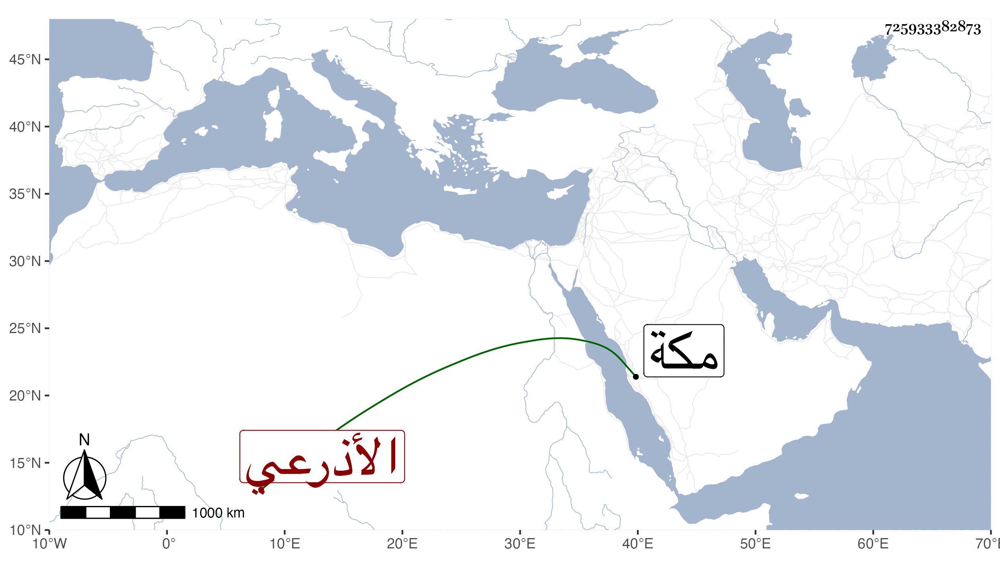

0902Sakhawi.DawLamic.ITO20230111-ara1.EIS1600.725933382873
Biography ID: 725933382873
755
خليل بن عبد الله الأذرعي ويعرف بالقابوني ذكره شيخنا في أنبائه وقال كان صالحا مباركا منقطعا عن الناس مثابرا على العبادة كتب الكثير للناس بخطه الحسن ومن ذلك كما وقفت عليه الموجود من صحيح ابن خزيمة ، قليل الكلام كثير الحج مع فقره ، وكان الناس يأتمنونه على الصدقات التي يريدون إرسالها إلى مكة ويستبشر به المكيون إذا حج لكثرة إحسانه إليهم وكان للشاميين فيه اعتقاد زائد . مات بالطاعون في صفر سنة أربع عشرة وله ثلاث وستون سنة ، وكانت جنازته فيها النائب والناس . قلت وأظنه والد شيخنا الزين عبد الرحمن بن الشيخ خليل القابوني فإن يكنه فهو الصلاح أبو الصفا خليل بن سلامة بن أحمد بن علي .
